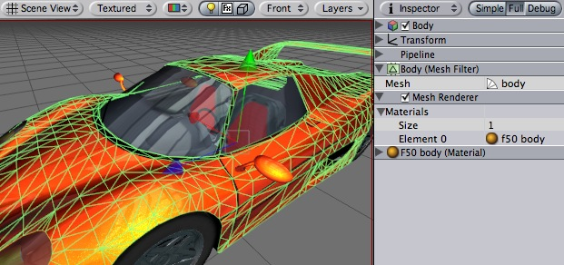

Previous
Previous
The Mesh Renderer takes the geometry passed through the rendering pipeline and renders it at the position defined by the object's Transform component.

A Mesh Renderer together with Mesh Filter makes the model appear on screen. Car model courtesy of ATI Technologies Inc.
Properties
| Property: | Function: |
|---|---|
| A list of materials to render model with. |
Details
Meshes imported from 3D packages can use multiple materials. For each material there is an entry in Mesh Renderer's Materials list.